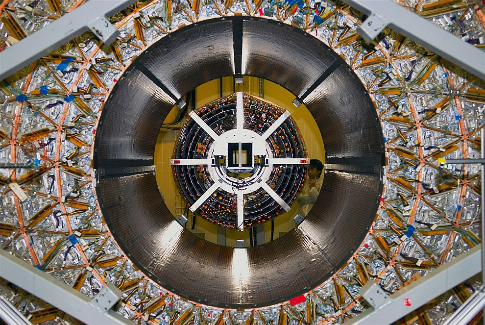

Ква́нтовая фи́зика
Раздел теоретической физики, в котором изучаются квантово-механические и квантово-полевые системы и законы их движения. Основные законы квантовой физики изучаются в рамках квантовой механики и квантовой теории поля и применяются в других разделах физики. Все современные космологические теории также опираются на квантовую механику, которая описывает поведение атомных и субатомных частиц. Квантовая физика сосредоточена только на математическом описании процессов наблюдения и измерения.
История
Квантовая физика и её основные теории — квантовая механика, квантовая теория поля — были созданы в первой половине XX века учёными, среди которых Макс Планк, Альберт Эйнштейн, Эрвин Шрёдингер, Луи де Бройль, Поль Дирак, Нильс Бор, Вольфганг Паули, Вернер Гейзенберг, Макс Борн, Людвиг Больцман.
Большой адронный коллайдер

©Семученко Максим Алекснандрович